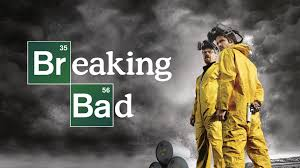
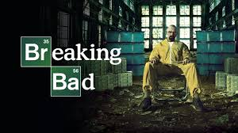

">
BREAKING BAD 🚬
walter white | jesse pinkman | skyler | gus fring| saul goodman | tuco salamanca

About The Series
A chemistry teacher diagnosed with inoperable lung cancer turns to manufacturing and selling methamphetamine with a former student to secure his family's future.
Walter White is a chemistry genius but works as a chemistry teacher at a high school in Albuquerque, New Mexico. His life drastically changes when he's diagnosed with stage III terminal lung cancer and given a prognosis of two years to live. To ensure that his pregnant wife and disabled teenage son have a financial future, he uses his chemistry background to create and sell the world's finest crystal methamphetamine. To sell his signature "blue meth," he teams up with Jesse Pinkman, a former student of his. The meth makes them very rich very quickly, but it attracts the attention of his DEA brother-in-law, Hank. As Walter and Jesse's status in the drug world escalates, Walter becomes a dangerous criminal, and Jesse becomes a hot-headed salesman. Hank is always hot on his tail, forcing Walter to devise new ways to cover his tracks.
synopsis
season 1
A struggling high school chemistry teacher, Walter White (Bryan Cranston), is diagnosed with inoperable, advanced lung cancer. On a ride along with his DEA agent brother-in-law Hank Schrader (Dean Norris), Walter sees a former student of his, Jesse Pinkman (Aaron Paul), fleeing the scene of a meth lab. He later contacts Jesse and devises a scheme to become partners in an attempt to combine their skills to manufacture and distribute methamphetamine, with Walter cooking the product and Jesse using his street connections to distribute it. Walter says he wants to provide financial stability for his pregnant wife, Skyler (Anna Gunn) and disabled son, and to pay for his expensive cancer treatment. During Walter and Jesse's first days of selling Albuquerque's finest meth, they encounter a series of problems with local drug dealers. Walter takes to selling the meth he produces to a local druglord, Tuco Salamanca (Raymond Cruz), using the alias 'Heisenberg'.
season 2
Walter continues to find himself facing insurmountable medical bills from his cancer treatment. Despite having had several bad experiences while producing meth with Jesse, Walter agrees to rejoin his partner. The two begin producing meth but run into multiple problems. Jesse's friend Badger (Matt L. Jones) is arrested while selling meth in a sting operation. Walter hires a lawyer, Saul Goodman (Bob Odenkirk), to help Badger. Walter and Jesse drive a recreational vehicle into the desert and produce meth for four days. Later, Combo, another of Jesse's friends and distributors, is killed by a rival gang for selling meth in their territory. Saul suggests the two find a new distribution model. Throughout this, Jesse has been building a relationship with his neighbor and landlord, Jane Margolis (Krysten Ritter). Jane, who is a recovering addict, relapses and the two begin doing heroin. Saul finds them a new business partner, Gus Fring (Giancarlo Esposito), who is willing to pay $1.2 million for the 38 pounds of meth they produced. Walter hastily delivers the product to Gus, but misses his daughter's birth. Walt withholds Jesse's half of the money because of his drug use, but Jane finds out about it and blackmails Walt. Walt visits Jesse's house and witnesses Jane overdosing and choking on her own vomit, but perceiving her as an enemy, sits idly beside her and lets her die. Skyler confronts Walter about his frequent absences and excuses. She begins to piece together his secret life and demands that they separate.
season 3
Walter wishes to reunite his family, but Skyler is still suspicious of Walter's second life. Walter believes he can mend the tension between them by confessing to her that he has been producing meth. Skyler is appalled by the confession and demands a formal divorce. Meanwhile, Gus offers to pay Walter $3M for three months of his service. He even offers to provide Walter with a state-of-the-art production facility and a brilliant lab assistant, Gale (David Costabile). Jesse is continuing to produce and sell meth by himself.
Hank is working with the DEA to investigate Jesse and is slowly gathering evidence to make an arrest. He survives an assassination attempt made by Tuco's twin cousins and manages to kill one of his assailants and critically injure the other, who later dies in the hospital. Hank suffers critical wounds but survives.
Jesse threatens to report Walter to the police if he is arrested, but Walter offers him Gale's position at the lab. After obtaining the position, Jesse begins stealing meth from the lab and selling it in secret on the side. Jesse gets romantically involved with a woman he meets in his rehab group and learns her kid brother, age 11, was put up by Gus and his street dealers to kill Combo. Jesse decides to avenge Combo. Walter aids Jesse in escaping from Gus's wrath. Gus begins to lose trust in Walter and asks Gale to take over the lab. He orders his henchmen to kill Walter and Jesse. After he is abducted by the henchmen, Walter instructs Jesse over the phone to kill Gale in order to force Gus not to kill Walter (and, by extension, Jesse) lest he eliminate his only remaining trained chemist.
season 4
Jesse follows Walter's instructions and murders Gale. Gus decides to discipline the two by enforcing stricter policies at the lab. He also tries to break Walter and Jesse's friendship by assigning them to separate work details. While Walter works in the meth lab, Jesse escorts Mike (Jonathan Banks), one of Gus's enforcers, to retrieve payments and provide back-up. Walter and Jesse become increasingly distant from, and hostile to, each other. Meanwhile, Hank, who has been recovering from his last engagement with the cartel, finds evidence linking Gale to Gus. He believes Gus is a major drug distributor and starts looking for tangible evidence to file charges. Gus realizes Walter's close ties with Hank could jeopardize his entire operation. Gus fires Walter and informs him Hank will be killed. He also warns Walter that if he intervenes his entire family will be murdered. Jesse and Walter put their differences aside and agree to murder Gus, convincing former cartel enforcer Hector Salamanca to detonate a suicide bomb; Hector succeeds in this endeavor, killing himself, Gus, and Tyrus, Gus's henchman. Walter and Jesse then destroy the meth lab and Walter declares to his wife, "I won."
season 5
Following Gus Fring's death, Walter partners with Jesse and Mike to create a new meth production and distribution operation. Mike handles all business aspects of the partnership, while Walter and Jesse work with a team of house fumigators to produce meth in tented houses. Hank and the DEA are able to identify nine prison inmates and one lawyer with criminal ties to Mike. Walter kills Mike, and is fearful that the informants will flip on Walter's operation since Mike is no longer able to pay them to keep quiet. He hires Jack Welker, the leader of a neo-Nazi gang, to kill the ten informants from within prison. Walter's business continues unimpeded until he decides to retire after accruing $80 million, which he buries in the desert.
Later, Hank is invited to the Whites' home, where he unintentionally stumbles upon one of Walter's books with a signed message from Gale Boetticher. He realizes that Walter is the infamous Heisenberg and secretly restarts the investigation. Hank forms an alliance with Jesse, who now despises Walter for all his wrongdoings. Left with no options, Walter hires Jack again to murder Jesse. Walter attempts to confront Jesse in the desert, but instead Hank traps and arrests him. The neo-Nazi gang arrives and engages Hank in a fierce firefight. Jack executes Hank despite Walter's pleas. Jesse is captured and forced into slavery, producing meth for the gang. Before leaving, Jack and his gang take a majority of Walter's money, leaving him with only $11 million.
Skyler and Walter Jr. are distraught over Hank's death and hold Walter accountable. They refuse to leave Albuquerque with Walter and instead contact the police. Walter spends the next several months hiding in a cabin in New Hampshire while struggling with cancer. He returns to New Mexico in order to visit his family one final time and seek revenge against Jack. Later that night, Walter executes all of the gang's members and frees Jesse, who escapes from the compound before the police arrive. Walter realizes he is mortally wounded from a gunshot and slowly succumbs to his injury as the police search the compound.
TRAILER

season 1
season 2
season 3
season 4
season 5
characters
- wlater white
- jesse pinkman
- saul goodman
- gus fring
- tuco salamanca
presented by
𝘼𝑠ќ𝚊ℝ 😉